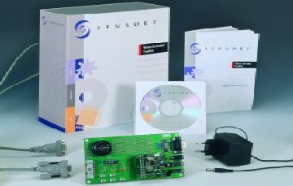
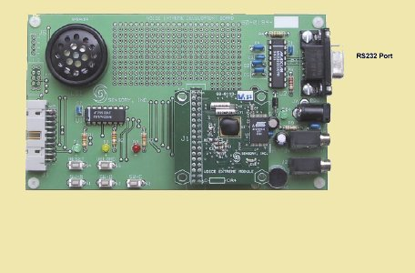
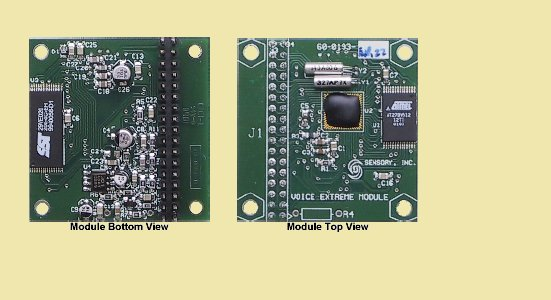
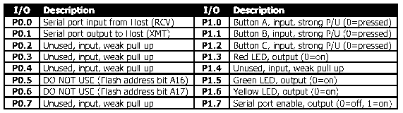
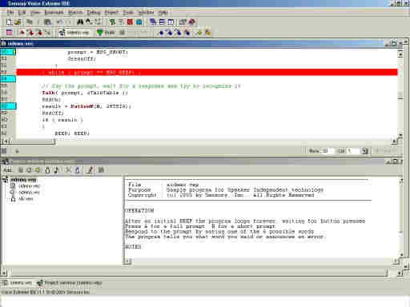
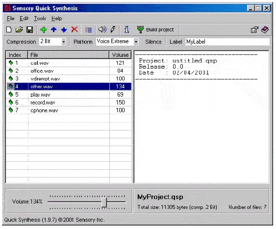

Module Voice Extreme SENSORY
Si vous avez rêvé un jour de commander à la voix une réalisation, ce module Voice Extreme est pour vous.
Présentation du Kit
Le module de reconnaissance vocale VoiceDirect fabriqué par SENSORY n'est pas une nouveauté. Ce qui l'est, c'est ce kit de développement qui constitue un outil destiné à intégrer une réelle capacité de reconnaissance vocale à vos propres réalisations. Son originalité : la possibilité de le programmer en langage C (Voice Extreme -C).

Composition du kit :
- Plaquette d'expérimentations avec microphone et haut-parleur inclus.
- Module de reconnaissance vocale Voice Extreme.
- Alimentation secteur & Câble de liaison série RS232.
- Manuel d'utilisation.
- CD-ROM (soft : Voice Extreme IDE - Quick Synthesis - Exemples - Documentation).
Configuration requise : Un PC tournant sous Windows (95 à XP), 16Mo de RAM, 15Mo sur disque dur et un port RS232.
La Carte et le Module

La plaquette d'expérimentationLe cœur du kit est le module Voice Extreme qui comporte un processeur, une ROM contenant le progiciel et une mémoire FLASH de 2Mo dans laquelle prendront place vos programmes. Le module peut être retiré et implanté sur votre application à l'aide d'un connecteur 34 points.
La plaquette d'expérimentation comporte une zone pastillée destinée à recevoir l'électronique de l'utilisateur. Vous disposez d'une liaison série RS232, d'entrées micro et haut-parleur externes, de trois LED et de cinq boutons poussoirs.

Caractéristiques Techniques :
- Processeur de traitement du signal (convertisseur A/N).
- Générateur de tonalité DTMF et synthétiseur vocal.
- Convertisseur N/A et amplificateur de puissance MLI (PWM).
- Lignes d'E/S numériques programmables.
- Faible consommation : de l'ordre de 10 mA.

Affectation des lignes d'Entrée/SortieL'Environnement Logiciel
Vous disposez pour programmer le module en langage C d'un Environnement de Développement Intégré (IDE). Cet environnement facilite la programmation claire et structurée grâce à la coloration syntaxique.

Le Kit logiciel comprend l'IDE, un compilateur C (proche de l'ANSI-C), un éditeur de liens (linker), un programme de transfert et le logiciel Quick Synthesis qui permet de convertir des fichiers audio .WAV dans le format reconnu par le module.

Pour bien démarrer :
Vous pouvez vous familiariser rapidement avec le module en essayant les nombreux programmes d'exemples fournis : écrivez votre code dans l'IDE, téléchargez-le dans la mémoire FLASH via la RS232, et exécutez-le. Les débutants en C n'auront aucune difficulté grâce à l'abondante documentation sur les fonctions de reconnaissance vocale.
Fournisseurs
À l'époque, plusieurs fournisseurs existaient en France, dont :
- SELECTRONIC (Réf: 22.7888)
- LEXTRONIC (Réf: KDVE364)